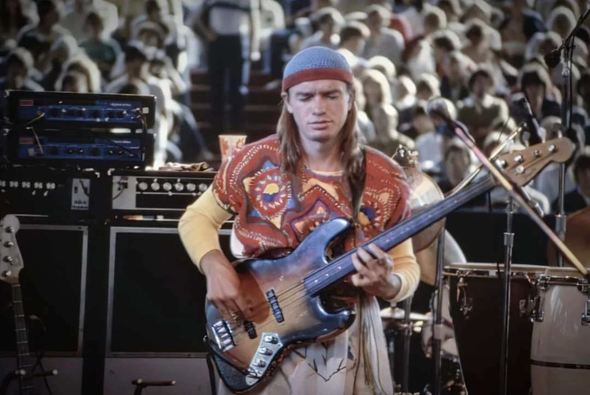
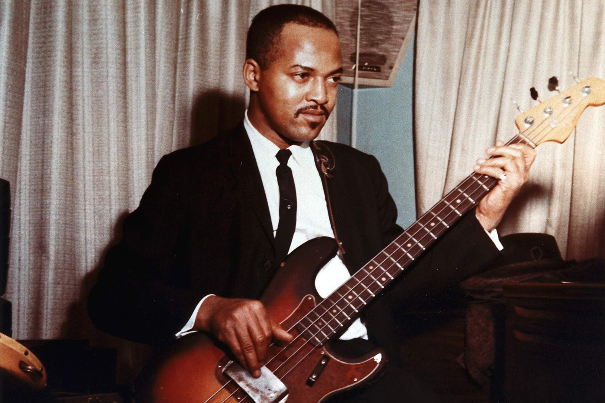
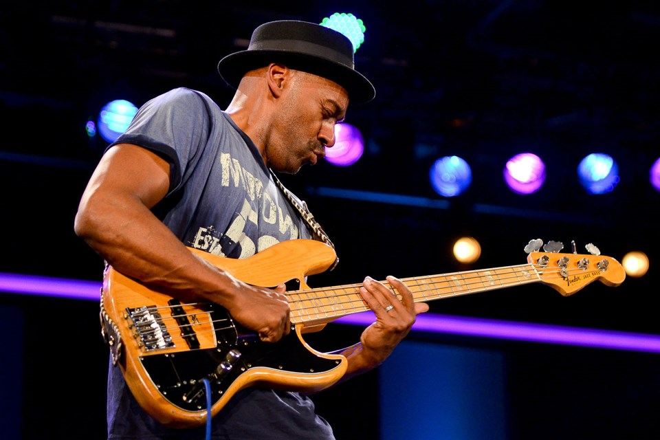

Legendary Bassists: Icons of the Bass Guitar World
Welcome to our tribute to the greatest bass guitar players of all time. These exceptional musicians have shaped the sound of modern music with their innovative techniques, unforgettable grooves, and iconic performances. Explore the stories, styles, and contributions of these bass legends who have left an indelible mark on the music industry.
The Legacy of Bass Guitar Greats
These bassists have not only shaped their genres but also influenced countless musicians who followed in their footsteps. Their innovative techniques and unique styles have expanded the possibilities of the bass guitar and continue to inspire new generations of players.
Jaco Pastorius
Often hailed as the greatest bassist in history, Jaco Pastorius revolutionized the bass guitar with his groundbreaking techniques and virtuosic playing. His work with Weather Report and his solo albums showcased his unparalleled skill and creativity. Jaco’s use of harmonics, fingerstyle technique, and complex improvisation redefined what was possible on the bass guitar.
Notable Work
- Heavy Weather (Weather Report)
- Jaco Pastorius (Solo Album)
James Jamerson
A cornerstone of the Motown sound, James Jamerson was known for his intricate and melodic bass lines that became the foundation of countless hits. His work with The Funk Brothers helped define the sound of the 1960s and 1970s soul and R&B. Jamerson’s ability to blend rhythm and melody created grooves that are still studied and admired by bassists today.
Notable Work
- What's Going On (Marvin Gaye)
- I Heard It Through the Grapevine (Gladys Knight & the Pips)
Marcus Miller
Marcus Miller is celebrated for his exceptional skill and versatility across genres. Known for his work with jazz, funk, and R&B, Miller’s smooth playing and powerful slap bass technique have made him a sought-after session musician and bandleader. His contributions to jazz and fusion music have earned him numerous accolades and a devoted following.
Notable Work
- Tutu (miles Davis)
- The Sun Don't Lie (Solo Album)